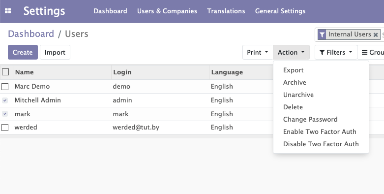
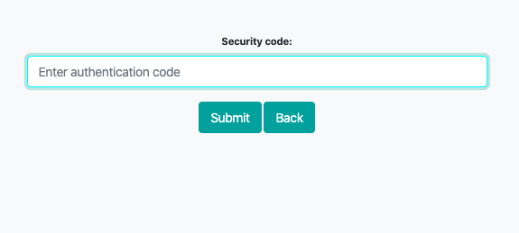
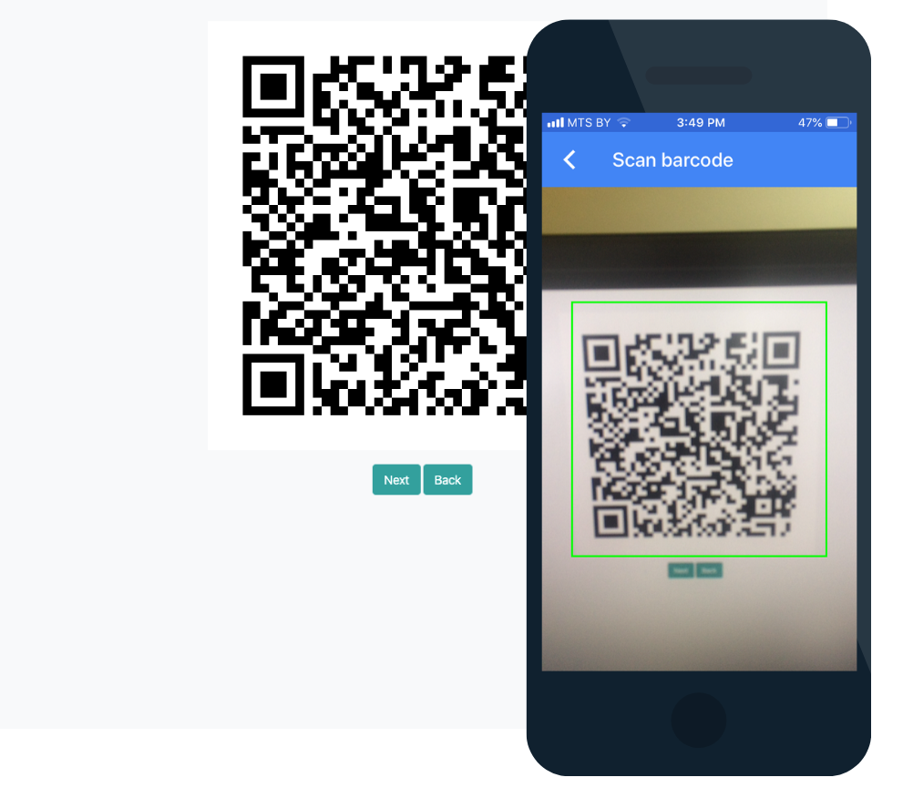
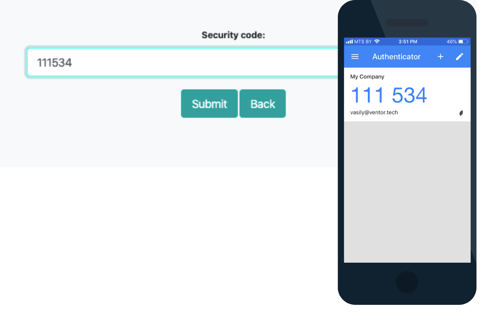
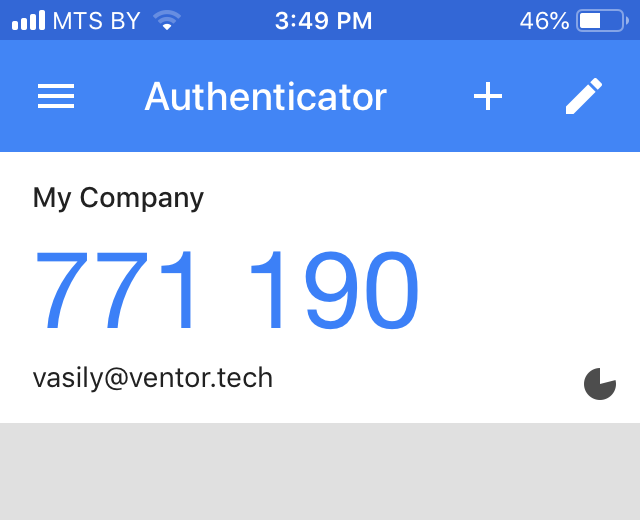

<section class="oe_container">
    <div class="oe_row">
        <div class="oe_span12" style="text-align: center; margin-bottom: 5px">
            <p style="padding: 5px; font-size: 16px; font-weight: bold; background-color: yellow; display: inline">
                TO AVOID ANY ISSUES, PLEASE, USE ALWAYS LATEST VERSION FROM
                <a href="https://github.com/ventor-tech/merp/tree/13.0">
                    OUR GITHUB REPOSITORY
                </a>
            </p>
        </div>
        <div class="oe_span12">
            <div class="oe_row_img oe_centered">
                <div class="oe_span12">
                    <h2 class="oe_slogan" style="text-align: center;">Two-factor authentification</h2>
                </div>
                    <p style="margin-left: 10%; font-size: 14px">
                    The fact of having sensitive data on the web, and only protected by a single password is not acceptable from a data security point of view.
                    The risks are well known, loss of reputation, fines, legal action, partial or total loss of business, cost of recovery.
                </p>
                <p style="margin-left: 10%; font-size: 14px">
                    The module functionality
                    You will be able to switch on the 2FA for every user
                </p><br>
                
                <p style="margin-left: 10%; font-size: 14px">
                    Then while logging they will be requested for an additional key
                </p>
                
                <p style="margin-left: 10%; font-size: 14px">
                    The key is generated by the <a href="https://www.google.com/landing/2step/#tab=how-it-works">Google Authenticator mobile app.</a>
                    While the first login you need to scan a QR code using this app
                </p><br>
                <p style="margin-left: 10%; font-size: 14px">
                    While the first login you need to scan a QR code using this app
                </p>
                
                <p style="margin-left: 10%; font-size: 14px">
                    And the app shows you the key you need to insert into a related field
                </p>
                
                <p style="margin-left: 10%; font-size: 14px">
                    When you log in again the scanning is not required. The app resets the key about every 30 second and generates a new one
                </p>
                
                
                <p class="text-center" style="font-size: 14px"><a href="https://ventor.tech/">ventor.tech</a></p>
            </div>
        </div>
    </div>
</section>
